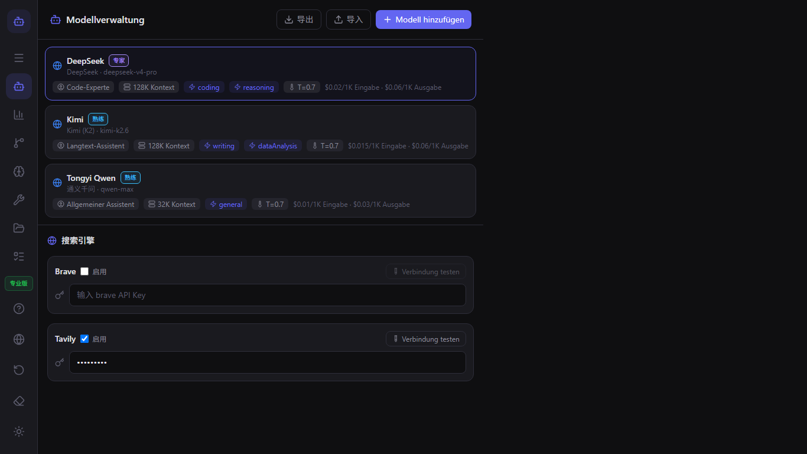
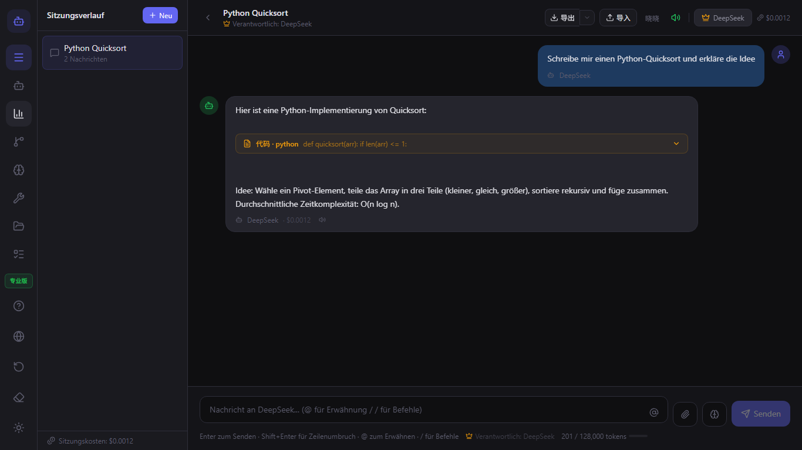
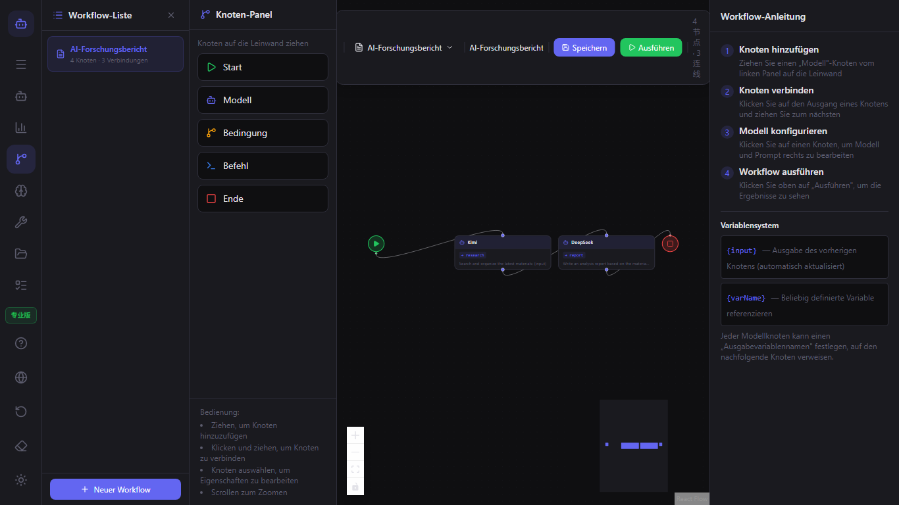
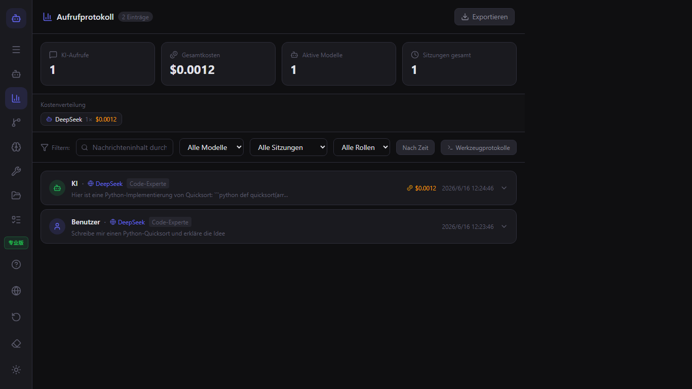

ModelFlow Benutzerhandbuch
Willkommen bei ModelFlow. Dieses Handbuch behandelt alles vom ersten Start bis hin zu fortgeschrittenen Multi-Modell-Workflows.
Schnellstart
- Laden Sie ModelFlow aus dem Microsoft Store herunter.
- Öffnen Sie die App und schließen Sie die Einführung ab.
- Fügen Sie im Modell-Manager Ihr erstes Modell hinzu.
- Starten Sie einen Chat und tippen Sie
@modell-name, um zwischen Modellen zu wechseln.
Modellverwaltung
Verwenden Sie den Modell-Manager, um Text-, Bild-, Video- und Audiomodelle hinzuzufügen. Für jedes Modell können Sie den Anbieter, den API-Schlüssel, die Rolle, das Kontextfenster und die Kostengrenzen festlegen.

Chat & @-Erwähnungen
Tippen Sie @ gefolgt von einem Modellnamen, um die nächste Antwort an dieses Modell zu leiten. Sie können mehrere Modelle in derselben Unterhaltung verketten.

Workflows
Öffnen Sie den Workflow-Editor, um visuelle Pipelines zu erstellen. Ziehen Sie Modell-Knoten, Bedingungs-Knoten und Befehls-Knoten auf die Arbeitsfläche und verbinden Sie diese.

Plugins
ModelFlow unterstützt verifizierte Plugins und Community-Plugins. Installieren Sie Plugins über den Plugin-Manager oder erstellen Sie eigene.

Lokale CLI & Tools
Modelle können lokale Befehle ausführen, Dateien lesen und Verzeichnisse auflisten. Tippen Sie /tool im Chat oder fügen Sie einen Befehls-Knoten zu einem Workflow hinzu.

Anrufprotokoll & Kosten
Das Anrufprotokoll zeichnet jeden KI-Aufruf, jede Tool-Ausführung, die Token-Nutzung und die geschätzten Kosten auf. Exportieren Sie Protokolle zur Analyse.

Einstellungen & Datenschutz
ModelFlow ist lokal-first. Ihre Sitzungen, Modellkonfigurationen und Plugins werden auf Ihrem Gerät gespeichert. Ändern Sie Sprache, Arbeitsbereich und exportieren Sie Daten in den Einstellungen.